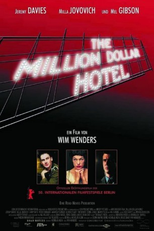

#9833 The Million Dollar Hotel
 
 IMDB-Wertung: 5.9 / 10
IMDB-Wertung: 5.9 / 10  Metascore: 0
Metascore: 0 
Ein heruntergekommenes Luxushotel in Los Angeles: Der Sprung des Malers Izzy vom Hoteldach würe normalerweise als Selbstmord zu den Akten gelegt werden, doch weil Izzy ein Millionärssohn war, muss Detective Skinner ermitteln. Der Fahnder pickt sich den kindlichen Tom Tom heraus, der die autistisch wirkende Streunerin Eloise liebt.Ist er der Schlüssel zum Motiv?
Jahr: 2000
Dauer: 122 Minuten
FSK: 12
Land: Deutschland Studio: Concorde FilmverleihTonspuren: DTS - ,
Untertitel:
Auflösung: 1080p (1920x816) Größe: 9799 MB
Genre: Thriller, Drama, Mystery
Regisseur:  Wim Wenders
Wim Wenders
Drehbuch: Bono, Nicholas Klein, Nicholas Klein
Soundtrack: Brian Eno, Jon Hassell, Daniel Lanois
Darsteller:
Datei: X:\2000\Million Dollar Hotel, The (2000, FSK12, 1920x816).mkv seit 30.10.2018
Festplatte: HD 1996-2002
 Es gibt insgesamt 82 Filme in der Gruppe '2000'
Es gibt insgesamt 82 Filme in der Gruppe '2000'